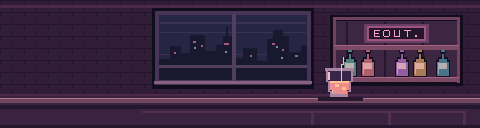

CROWNHEAD / AFTER HOURS
■ 夜班营业

深夜吧台 / 一个约定的座位
CROWNHEAD AFTER HOURS
The last light is mine.
PROLOGUE00 / PRIVATE LOG
这里只显示当前浏览器里保存的序章。
编辑或导入序章
吧台 02 / COUNTER
随手写0 字符
今晚的座位还空着。
想写的时候，再点「写一篇」。
本机存储、备份与废纸篓
手记只保存在当前浏览器，不上传、不跨设备同步，也未加密。清除浏览数据可能丢失，请定期下载备份。备份包含废纸篓和原文，请妥善存放。